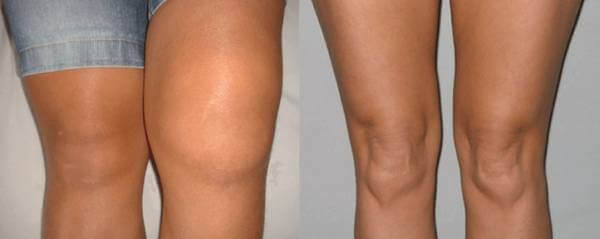

นักวิจัยได้คิดค้นวิธีกำจัดปัญหาการอักเสบและปัญหาต่างๆของปัญหากระดูกข้อต่อ โดยไม่ต้องทำการผ่าตัด หายภายใน 4 สัปดาห์
แม้ว่าคุณจะอายุ 60 ปี แต่แค่ภายใน 4 สัปดาห์คุณก็สามารถมีข้อต่อกระดูกที่แข็งแรงดั่งคนวัย 20 ปี อาการปวดเข่าข้อศอกสะโพกหรือข้อมือจะลดลงและข้อต่อจะฟื้นตัวเต็มที่ สิ่งเหล่านี้ต้องขอบคุณสูตรของศาสตราจารย์ เหงียน เฟือง คอง
ศาสตราจารย์ เหงียน เฟือง คอง ผู้เชี่ยวชาญที่มีประสบการณ์ในสาขาศัลยกรรมกระดูก ได้มีการใช้วิธีการต่าง ๆในการฟื้นฟูข้อต่อ ประสบการณ์ทำงานยาวนานกว่า 22 ปี
ถือเป็นการประสบความสำเร็จอย่างยิ่งในการวิจัยเพื่อพัฒนาครีมบรรเทาอาการปวดข้อและเส้นยึด สูตรเย็นมีกลิ่นหอม ใช้ง่ายและที่สำคัญคือสกัดมาจากธรรมชาติ เหมาะสำหรับผู้ที่มีอาการปวดข้อกระดูก ไม่ว่าจะเป็นข้อเข่า สะโพก ปวดหลัง หรือข้อต่อส่วนอื่นๆในร่างกาย
ผู้เข้าร่วม 272 คน ที่เข้าร่วมทดสอบสูตรของศาสตราจารย์ในเวลา 30 วัน ก็ถึงกับต้องตกใจไปพร้อมๆกับผลลัพธ์ เพราะอาการปวดตามข้อของผู้สมัครนั้นหายดี บางรายยังสามารถกลับไปออกกำลังกายได้เหมือนแต่ก่อนอีกด้วย
นี่คือผลที่ได้รับจากผู้เข้าอบรม:
- กำจัดปัญหาอาการปวดข้อต่อหรือปวดหลังภายในสัปดาห์แรกหลังใช้งาน
- กำจัดปัญหาอาการปวดข้อหรืออาการรู้สึกข้อตึงแข็งภายในสองสัปดาห์
- ช่วยบรรเทาอาการอักเสบและการฟื้นฟูขององค์ประกอบที่สำคัญของข้อต่อ (ต่อมไพเนียล, กระดูกอ่อนข้อ) ภายใน 4 สัปดาห์
- กลับสู่สภาพร่างกายเต็มรูปแบบหลังจากผ่านไป 30 วัน
เราไปถามความคิดเห็นกับคุณ มาลีวัลย์ อายุ 45 ปี ที่เป็นลูกค้ารายแรกๆของเรา
”หลังจากสัปดาห์แรกที่ทาครีมฉันรู้สึกหายปวดข้อต่อแล้วค่ะ ฉันสามารถขยับขา สะโพกได้สบายเลยค่ะ นับวันอาการก็ยิ่งดีขึ้นเรื่อยๆ ฉันสามารถเดินขึ้นบันไดได้ ก้าวสองขั้นยังได้เลยค่ะ! ผ่านไปเดือนนึงอาการปวดหายไปโดยสิ้นเชิง เดี๋ยวนี้ดิฉันสามารถออกกำลังกายได้ด้วยนะ”
สำหรับคนทั่วไปอาจจะฟังดูไม่น่าเชื่อ
คุณอาจจะคิดว่าการกำจัดปัญหาด้วยการทาครีมนั้นยากที่จะเชื่อหรือแทบเป็นไปไม่ได้เลยจริงไหม แต่จากมุมมองของนักวิจัยนั้น มันเป็นการฟื้นฟูธรรมชาติของร่างกาย ไม่มีอะไรลึกซึ้งหรือซับซ้อนไปกว่านั้นเลย ผู้คิดค้นสูตรอธิบายว่า
ศ.: เราพบว่ามีสารที่มีฤทธิ์บางตัวซึมผ่านโครงสร้างนาโนสแตมของข้อต่อและกระตุ้นให้ chondroblasts ฟื้นตัว พวกเขาไม่เพียงแต่ลบสาเหตุของการอักเสบ แต่ยังช่วยบำรุงเซลล์และเริ่มต้นกระบวนการของการกำจัดปัญหาด้วยตนเอง ช่วยต่ออายุและฟื้นฟูร่างกายอย่างแท้จริง สารออกฤทธิ์เหล่านี้สามารถ:”
- กระตุ้นให้ chondroblasts สามารถงอกใหม่ได้อย่างเต็มที่ ไม่จำกัดอายุ
- เพิ่มปริมาณของเนื้อเยื้อในไขข้อ 40% - โดยที่ข้อต่อมีความแข็งแรงและยืดหยุ่นมากขึ้น
- ลดการอักเสบได้เร็วกว่า 9 เท่า -นับวันอาการก็ดีขึ้นเรื่อยๆ
แแต่นั่นไม่ใช่ทั้งหมด ส่วนผสมในตัวผลิตภัณฑ์นี้จะช่วยชะลอการสูญเสียคอลลาเจนและของเหลวที่มีต่อจุลินทรีย์และกระตุ้นให้เซลล์สร้างตัวเองได้ เป็นผลให้ความสามารถในการเคลื่อนไหวข้อต่อได้รับการฟื้นฟูในระดับเซลล์ร่างกายจะซ่อมแซมความเสียหายเอง เป็นวิธีธรรมชาติ เพื่อให้ทุกคนสามารถได้รับการแก้ไขปัญหานี้ ผมจึงนำมันมาใส่ในรูปแบบครีมที่เรียกว่า Depanten
เพิ่มการผลิตน้ำไขข้อและการเสริมสร้างกระดูกอ่อนใน 4 สัปดาห์
สูตรของ Depanten ได้รับความนิยมและได้รับความชื่นชมจากผู้บริโภคอย่างมาก ไม่ว่าจะเป็นนักกีฬาหรือคนที่ขาดสารอาหารหรือวิตามินซีก็สามารถกำจัดปัญหาเกี่ยวกับกระดูกข้อต่อได้อย่างมีประสิทธิภาพภายในระยะเวลา 4 สัปดาห์
นักวิจัยและผู้เชี่ยวชาญได้คิดค้นสูตรเฉพาะตัวจนออกมาเป็นครีมฟื้นฟูข้อต่อที่มีคุณภาพอย่าง Depanten อุดมไปด้วยสารสกัดที่มีประสิทธิภาพ เช่น สารสกัดจากน้ำมันอัลมอนด์ ซึ่งมีน้ำมันมีวิตามิน B 17 ซึ่งมีผลในการแก้ปวดและยังช่วยเพิ่มกระบวนการเผาผลาญ แทรกซึมผิวหนังอย่างล้ำลึกและขจัดกระบวนการอักเสบอย่างรวดเร็ว
ที่พิเศษกว่านั้น ผลิตภัณฑ์นี้อุดมสารสกัดจากว่านหางจระเข้ มีผลฆ่าเชื้อแบคทีเรียและ กับจุลินทรีย์หลายกลุ่ม; มีคุณสมบัติในการรักษาบาดแผลที่มีประสิทธิภาพ เพิ่มความแข็งแรงของร่างกาย; มีฤทธิ์ต้านอนุมูลอิสระและมีฤทธิ์ต้านการอักเสบบรรเทาอาการบวม นอกจากนี้ยังมี สารสกัดจากพริกแดงเป็นสารกระตุ้นที่มีประสิทธิภาพในการไหลเวียนโลหิตและเส้นประสาทส่วนปลายของผิวหนัง ช่วยปรับปรุงกระบวนการเผาผลาญและลดความเจ็บปวด ด้วยแคปไซซิน (Capsaicin) ซึ่งเป็นองค์ประกอบ “การเผาไหม้” ของพริกแดงทำปฏิกิริยากับระบบประสาทส่วนปลายซึ่งส่งสัญญาณความเจ็บปวดไปยังสมอง
เนื่องจากส่วนประกอบที่บรรจุในผลิตภัณฑ์สกัดมาจากธรรมชาติจึงไม่เป็นอันตราย ผู้เชี่ยวชาญต่างแนะนำให้ใช้ Depanten เพื่อฟื้นฟูข้อต่อกระดูก ผลิตภัณฑ์ตัวนี้ได้ผ่านการตรวจสอบทางวิทยาศาสตร์ และได้รับใบรับรองว่ามีประสิทธิภาพ
นี่ถือว่าเป็นวิธีการกำจัดปัญหาข้อกระดูกที่มีประสิทธิภาพ ช่วยบรรเท่าอาการเจ็บข้อ ยับยั้งอาการอักเสบ ทำให้ข้อต่อกับมาเคลื่อนไหวออย่างปกติ กำจัดปัญหาอาการข้ออักเสบ ปัญหาข้อเข่าเสื่อม ปัญหาไขข้ออักเสบ ปัญหากระดูกพรุนและปัญหาสุขภาพอันตรายอื่น ๆที่เกี่ยวข้องกัยข้อต่อ! บางครั้งถึงแม้จะเสียเงินแพงๆก็ไม่สามารถให้ผลได้ดีเท่ากับ Depanten ได้
และที่สำคัญที่สุดคือแม้แต่ผู้เชี่ยวชาญด้านปัญหาไขข้ออักเสบและศัลยกรรมกระดูกยังแนะนำให้ใช้ Depanten เพื่อการแก้ไขปัญหาข้อต่อที่ดีที่สุด เป็นครั้งแรกที่สามารถกำจัดปัญหาเองได้ง่ายๆที่บ้าน มีส่วนประกอบที่มีประสิทธิภาพที่สุดที่จะบรรเทาอาการปวดข้อและยับยั้งอาการอักเสบ ทำให้ข้อต่อกลับมาเคลื่อนไหวได้อย่างปกติ !
ไม่ว่าคุณจะมีอายุเท่าไหร่คุณก็สามารถมีข้อต่อที่สมบูรณ์แบบและใช้ชีวิตอย่างเพลิดเพลินได้ และร่างกายของคุณก็จะไม่มีอาการปวดและแข็งตามข้อต่ออีกต่อไป
Depanten ได้ผ่านการทดสอบประสิทธิภาพจากสถาบันชั้นนำอย่าง FDA และการรับรองจากผู้เชี่ยวชาญแล้วว่าเป็นวิธีที่ปลอดภัย ผู้เชี่ยวชาญส่วนมากจึงแนะนำผลิตภัณฑ์ตัวนี้สำหรับผู้ที่มีปัญหาข้อกระดูก
วิธีสั่งซื้อผลิตภัณฑ์ Depanten เพื่อบรรเทาอาการปวดข้อใน 4 สัปดาห์?
ผลิตภัณฑ์สามารถหาได้จากเว็บไซต์ทางการของผู้ผลิตเท่านั้น Depanten ประสบความสำเร็จอย่างมากในอังกฤษ ซึ่งได้ช่วยผู้คนกว่า 27,000 ราย และกำลังได้รับความนิยมอย่างมากทั้งในไทยและต่างประเทศ เนื่องจากสินค้าต้องนำเข้าจากต่างประเทศ อาจทำให้สินค้ามาสู่ตลาดไทยมีความล่าช้าได้ และสินค้าอาจจะหมดสต๊อกภายในไม่ช้านี้ หากคุณสนใจในสูตร Depanten เราขอแนะนำให้คุณสั่งซื้อผ่านเว็ปไซต์ของผู้ผลิต
เพื่อเป็นเจ้าของผลิตภัณฑ์ Depanten คุณสามารถสั่งซื้อ Depanten ผลิตภัณฑ์สำหรับข้อต่อซึ่งจะช่วยบรรเทาอาหารปวดข้อ ทำให้ข้อต่อกลับมาเคลื่อนไหวได้อย่างปกติ ยับยั้งอาการอักเสบและปัญหาในข้อต่ออื่นๆ ในราคาลดพิเศษโดยตรงจากทางเว็ปไซท์ของทางผู้ผลิต กรอกลงในแบบฟอร์มที่แนบมาให้เพื่อยืนยันการติดต่อกลับ หลังจากลงทะเบียนทางผู้เชี่ยวชาญจะติดต่อคุณกลับไปฟรีไม่มีค่าใช้จ่ายใดใดทั้งสิ้น พร้อมรับ Depanten ในราคาโปรโมชั่นส่วนลดสูงสุดถึง 50% ตั้งแต่วันที่ ถึง !
บรรเทาอาการปวดข้อและเส้นยึดภายใน 4 สัปดาห์!
ส่วนลด 50% ใช้ได้ถึงวันที่
อลิซ มีพูน
มันเจ๋งมากเลยค่ะ! หนูซื้อ Depanten ให้แม่เป็นของขวัญวันเกิดอายุ 45ปี หลังจากทาไปประมาณ 3 เดือนได้ หนูแทบจำแม่คนเก่าไม่ได้เลยค่ะ! แม่สามารถวิ่งขึ้นลงบรรไดไปถึงชั้น 3 ได้อย่างสบายๆเลยค่ะ;) แนะนำจริงๆค่ะ!
ถูกใจ ‧ ตอบกลับ ‧  0 ‧ ล่าสุด
0 ‧ ล่าสุด

ดาว ลัดดาวัน
ดาวเองก็เป็นคนที่กระดูกข้อต่อไม่ค่อยจะดีหรอก ทั้งหมดเพราะทำงานเยอะ ยืน 8 ชั่วโมงเงี้ย ฝันร้ายชัดๆเลย พอตกเย็นนะแทบจะร้องไห้เลยค่ะ ช่วยบอกทีนะคะว่าทากันแล้วเป็นยังไงบ้าง?ช่วยอะไรได้บ้างไหม? ใครเคยทาช่วยแชร์ประสบการณ์หน่อยนะคะๆ
ถูกใจ ‧ ตอบกลับ ‧ 8 ‧
พัท รัชพล
ผมได้สั่งซื้อผลิตภัณฑ์ที่ พัสดุมาส่งเร็วมากๆ น่าเสียดายที่ผมเพิ่งเริ่มใช้ได้ไม่นานเลยไม่สามารถรีวิวตัวผลิตภัณฑ์ได้ว่าใช้ไปนานๆแล้วเป็นยังไง แต่บอกได้อย่างนึงว่า ภายใน 7 วันแรก อาการปวดเข่าหายไปเลยครับ รู้สึกหนุ่มขึ้น 10 ปีเลยฮะ :)
ถูกใจ ‧ ตอบกลับ ‧ 11 ‧ 05.05.2563
พัชระ แก้วจันทร์
ผมได้ทำงานในด้านวิทยาศาสตร์มามากกว่า 20ปี และพึ่งได้รู้จักกับผลิตภัณฑ์ที่ล้ำเลิศนี้ เพื่อนร่วมงานของผมได้พูดข้อดีของตัวผลิตภัณฑ์ตัวนี้ว่าสกัดจากธรรมชาติล้วนๆ เท่าที่ผมทราบมันมีประสิทธิภาพจริงๆครับ
ถูกใจ ‧ ตอบกลับ ‧ 14 ‧ 05.05.2563

นานา โชติกา
ในที่สุดก็หาซื้อได้ที่ไทยแล้วว! พี่สาวเราอยู่ลอนดอนอ่ะ ที่นั่นเค้าขาย Depanten ก่อนไทยหลายเดือนละ ;p
ถูกใจ ‧ ตอบกลับ ‧ 19 ‧ 05.05.2563
หญิง คำพูน
ได้ยินมาว่าระหว่างที่ใช้ผลิตภัณฑ์ตัวนี้ ควรจะกินโปรตีนเยอะกว่าปกติด้วย จะช่วยให้เร่งผลลัพธ์หรือไงเนี่ยแหละค่ะ แต่ส่วนตัวยังไม่เคยลองนะ
ถูกใจ ‧ ตอบกลับ ‧ 16 ‧ 05.05.2563

วิภาลัย มาโนช
เพิ่งกลับมาจากสัมมนาเกี่ยวกับส่วนผสมในตัวผลิตภัณฑ์นะคะ ซึ่งมันดีจริงๆค่ะ ช่วยกำจัดปัญหากระดูกได้จริงๆ แถมยังสร้างเนื้อเยื้อที่ทำการต่อช่วงข้อของกระดูกด้วยค่ะ ในหลายๆเคสที่หลังใช้ผลิตภัณฑ์ตัวนี้แล้ว ข้อกลับมาทำงานดีเหมือนเกิดใหม่เลยค่ะ ใช้เวลากำจัดปัญหาประมาณ 1 เดือนเท่านั้นนะ แน่นอนค่ะ วินัยในการบริโภคอาหาร รวมทั้งการออกกำลังกายอย่างสม่ำเสมอก็สำคัญค่ะ
ถูกใจ ‧ ตอบกลับ ‧ 21 ‧ 04.05.2563

บัว ฤทธิพงศ์สุข
ซื้อให้พ่อค่ะ แกบอกว่าใช้ดีมากเลยนะ เพราะฉนั้น ผ่านค่ะ:)
ถูกใจ ‧ ตอบกลับ ‧ 20 ‧ 04.05.2563

ไก่ ขวัญใจ
เราลองแล้ว ก็ยังไม่เท่าไหร่นะ คือโอเคระดับนึงอ่ะ แบบว่าไม่เจ็บหัวเข่าแล้วล่ะ ไม่รู้สึกเจ็บแปร๊บๆแล้วเวลานั่งเวลาขยับ รู้สึกดีขึ้นเยอะค่ะ ;)
ถูกใจ ‧ ตอบกลับ ‧ 17 ‧ 02.05.2563
พงศกร บุญรักษา
ผมซื้อมาให้ลูกสาวใช้ครับ แกมีอาการปูดบวมบริเวณข้อที่นิ้วเท้าโดยไม่ทราบสาเหตุ คิดว่าน่าจะเพราะใส่ส้นสูงนานเกินไป แกบ่นปวดตลอดๆ หลังใช้ไปอาการปูดบวมก็ลดลงครับ นี่คือรูปที่ลูกสาวถ่ายไว้ก่อนและหลังทาครีม Depanten
ถูกใจ ‧ ตอบกลับ ‧ 15 ‧ 02.05.2563
ชมพูนุช พร้อมจิต
หนูนั่งอ่านหนังสือนานๆ แล้วชอบปวดหลังจะใช้ทาได้ไหมคะ?
ถูกใจ ‧ ตอบกลับ ‧ 16 ‧ 02.05.2563
เมธินี กิ่งไพจิตร
หลังจากที่ปรึกษาผู้เชี่ยวชาญอยู่นาน ก็ตัดสินใจสั่งซื้อ Depanten ให้คุณแม่ใช้ แกมีอาการปูดบวมที่มือทั้งสองข้าง แม่ทาอยู่เกือบ2 เดือน ตอนนี้ต้องบอกว่าหายสนิทแล้วจ้า
ถูกใจ ‧ ตอบกลับ ‧ 22 ‧ 29.04.2563
อารีรักษ์ มานะมั่น
เราสั่งซื้อมาเพราะจนปัญญากับการกำจัดปัญหาอาหารปวดข้อต่อ มันไม่ใช่แค่ปวดอย่างเดียวมันส่งผลให้มีอาการปูดบวมด้วย เราใช้มาหลอดที่3 แล้ว ตอนนี้เห็นได้ผลลัพธ์ที่พึงพอใจมาก

ถูกใจ ‧ ตอบกลับ ‧ 17 ‧ 29.04.2563